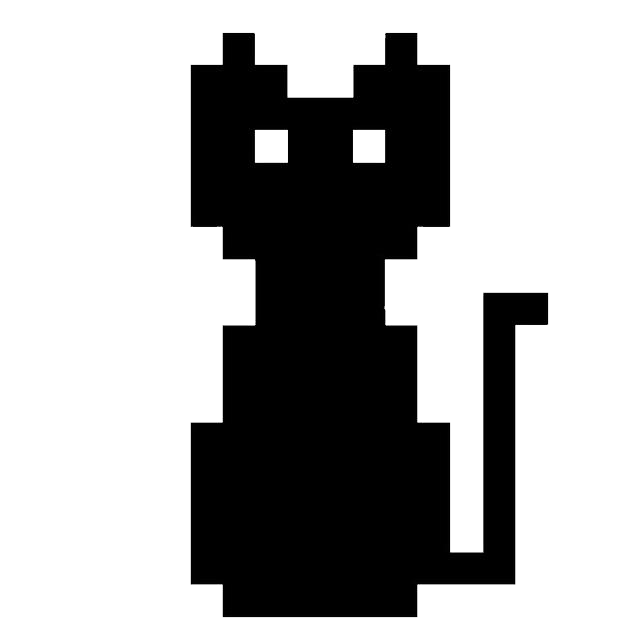

BinaryCat
Integer Sequence Learning
This is live demo of uData Crash Course group project made by our team, @BinaryCat.
{% if prediction %}Predicted number: {{ prediction }}{% elif bad_value %}{{ bad_value }}{% else %}{% endif %}
{% if pred_by %}Predicted by: {{ pred_by }}{% endif %}
Description
Integer Sequence Learning is a Kaggle competition aimed to discover new approaches to non-typical Data Science problems. Dataset contains 100K sequences, and the objective is to predict the next term. Metric used for model evaluation is Accuracy, hence we're heavily penalised for making incorrect predictions.
Our model uses a pipeline of algorithms to break task into more manageable pieces. Here is a short description of each algorithm:
- Prefix lookup using Trie data structure.
- Difference Table
- Linear and Non-linear Recurrent Relation
- Markov Chain
- Linear Regression
- RNN
- Mode. This is a good Baseline model to fall-back in case sequence has slipped through the pipeline without being recognized by any of more powerful models.